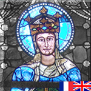
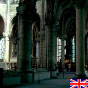

Architectuur
Elfde tot en met veertiende eeuw:
-

Kathedraal Chartres
Interactieve rondleiding in de kathedraal van Chartres, met plattegrond waardoor je een indruk krijgt wat waar te zien is. De kwaliteit van de foto’s is matig.
-

History of Gothic Architecture
Website met veel en goed fotomateriaal van de belangrijkste voorbeelden van de gotische bouwkunst. Onder andere kathedraal Reims, kathedraal Chartres, Notre Dame Parijs.